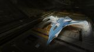

Оружейные крепления
3 больших · 3 средних (3 средние пушки Гаусса)
На три средних крепления можно поставить три пушки Гаусса для уничтожения сердец, на три больших — многоствольные пушки AX. Имперская скорость позволяет Corsair уклоняться от молний, от которых тяжёлые корабли теряют управление. В десяти дополнительных отсеках помещаются мощное усиление щита и корпуса и защитные модули Стражей, хотя у корабля нет военных отсеков и ангара для истребителя. Именно это ставит его чуть ниже Chieftain, Krait и Challenger. Ранг и разрешение не нужны, но цена высока.

Оценка пригодности корабля от 1 до 100 учитывает его полностью улучшенную сборку и сравнивает её с другими кораблями в этой роли. Подробнее: как оцениваются корабли.
Современный средний боевой корабль Gutamaya становится быстрым и хорошо вооружённым бойцом против таргоидов. На три средних крепления помещаются три пушки Гаусса — основное оружие для уничтожения сердец. Три больших крепления позволяют добавить улучшенные многоствольные пушки AX и непрерывно наносить урон корпусу. Имперская скорость и манёвренность позволяют уворачиваться от молний перехватчика, как и на других манёвренных средних кораблях. В десяти дополнительных отсеках, что много для боевого корабля, помещаются щит, усиление корпуса и защитные модули Стражей.
Причина оценки 84 и отставания от лучших средних кораблей AX вполне конкретна: у Corsair нет военных отсеков и ангара для истребителя. Защитить модули от молний таргоидов помогает усилитель модулей Стражей, но он занимает один из отсеков, нужных под щит и корпус. Отвлечь рой корабельным истребителем тоже нельзя. Chieftain, Krait Mk II и Challenger имеют хотя бы одно из этих преимуществ и поэтому впереди. Corsair отвечает тремя штатными креплениями под пушки Гаусса, высокой скоростью и вместительными отсеками. Ранг и разрешение не нужны.
Мобильный бой с таргоидами: охота на перехватчиков с уклонением от атак, стычки в зонах конфликта AX и любые вылеты, где быстрой платформе с шестью креплениями, пушками Гаусса и вместительными отсеками нужно держать дистанцию и избегать молний.
Четыре особенности делают Corsair эффективным охотником на таргоидов:
У Corsair нет военных отсеков, поэтому усилитель модулей Стражей занимает те же отсеки, что нужны под щит и броню. Свободы в выборе усилителей меньше, чем у Chieftain или Challenger. Кроме того, нет ангара для истребителя, который мог бы отвлекать противника. Базовая защита средняя (270 брони / ~235 МДж щита), а ~76,9 млн кр. — высокая цена для среднего корабля. Его сильные стороны — подвижность и огневая мощь.
Три средних крепления под пушки Гаусса и имперский форсаж до 355 м/с дают основную часть баллов. Без военных отсеков и с базовой защитой среднего уровня (270/~235 МДж) оценка ограничивается 84.
Итоговая 84/100 — итог по критериям боёв с таргоидами, в порядке важности. У каждого критерия есть вес (его доля из 100). Баллы по нему зависят от того, как корабль показал себя на фоне остальных. Сумма баллов даёт итоговую оценку.
| Критерий | Баллы | Почему столько |
|---|---|---|
| Гнёзда для пушек Гаусса | 23/25 | Три средних крепления рассчитаны на три пушки Гаусса, а три больших доступны для улучшенных многоствольных пушек AX и плазменной пушки Стражей. Всего шесть креплений: средних под пушки Гаусса больше, чем у Krait Mk II (2M) и Phantom, но меньше предельных четырёх у Gunship и Cutter. |
| Теплоёмкость и управление нагревом | 16/20 | Нагрев сдерживают скорость, теплоотводная катапульта и «Перегрузка» с «Рассеиванием тепла» на энергоустановке 7A. Три пушки Гаусса быстро разряжают конденсатор, а военных отсеков нет. Запас по нагреву выше среднего, но не лучший в классе. |
| Прочность корпуса и место под усилители | 14/20 | Десять дополнительных отсеков (6·6·6·5·5·5·4·3·2·1) позволяют довести эффективную броню до более чем ~2500 и доработанный щит до ~900 МДж. Однако без военных отсеков и при базовых 270 брони / ~235 МДж щита усилители модулей и корпуса Стражей делят отсеки со щитом и бронёй. Именно это ставит Corsair ниже Chieftain и Challenger. |
| Манёвренность | 23/25 | Скорость 280/355 м/с, хорошая имперская управляемость и форсаж до ~430 м/с с «Грязной настройкой» G5 — главные преимущества. Corsair уклоняется от молний, которые тяжёлым кораблям AX приходится выдерживать и от которых большим боевым кораблям вовсе не уйти. |
| Защита от едкого урона и вспомогательное оснащение | 8/10 | Четырёх внешних креплений и вместительных отсеков хватает на продвинутый ксеносканер, сбрасыватель поглотителей едкого вещества, дроны обеззараживания и несколько усилителей корпуса Стражей с защитой от едкого урона. Ангара для истребителя, который мог бы отвлечь рой, нет. |
| Взвешенный итог | 84/100 | Эта сумма совпадает с общей оценкой корабля в этой роли. |
Вес критерия отражает приоритеты авторов гайда, а не формулу игры. Длина полосы показывает, какую долю от максимума корабль набрал по этому критерию. Подробнее: как оцениваются корабли.
Таблицы сравнивают корабли именно для боёв с таргоидамии разделяют их по размеру посадочной площадки. Столбец Оружейные крепления показывает набор оружейных гнёзд для пушек Гаусса. Как и на остальных страницах, пригодность оценивается по шкале от 1 до 100.
| Корабль | Класс | Оружейные крепления | Плюсы и минусы | Оценка |
|---|---|---|---|---|
| Корабль Alliance Chieftain | Средняя | 2L 1M 3S | Оценка выше; манёвренность; охлаждениеКрепления под гаусс-пушки | 90 |
| Krait Mk II | Средняя | 3L 2M | Оценка выше; точки под Гаусс; манёвренностьПрочность корпуса | 89 |
| Корабль Alliance Challenger | Средняя | 1L 3M 3S | Оценка выше; прочность корпуса; защита от едкого уронаМанёвренность | 88 |
| Corsair этот | Средняя | 3L 3M | — отправная точка для сравнения | 84 |
| Krait Phantom | Средняя | 2L 2M | Манёвренность; нагревПрочность корпуса | 84 |
| Python Mk II | Средняя | 4L 2M | Гнёзда под Гаусс; защита от едкого уронаПрочность корпуса | 84 |
| Federal Gunship | Средняя | 1L 4M 2S | Прочность корпуса; защита от едкого уронаНиже оценка; манёвренность | 82 |
| Python | Средняя | 3L 2M | Прочность корпуса; защита от едкого уронаНиже оценка; манёвренность | 80 |
| Корабль Alliance Crusader | Средняя | 1L 2M 3S | Прочность корпуса; нагревНиже оценка; манёвренность | 79 |
| Federal Assault Ship | Средняя | 2L 2M | Манёвренность; прочность корпусаНиже оценка; гнёзда под Гаусс | 77 |
| Federal Dropship | Средняя | 1L 4M | Защита от едкого урона; гнёзда под ГауссНиже оценка; манёвренность | 73 |
| Mamba | Средняя | 1H 2L 2S | Манёвренность; нагревНиже оценка; прочность корпуса | 70 |
| Fer-de-Lance | Средняя | 1H 4M | Манёвренность; гнёзда под ГауссНиже оценка; прочность корпуса | 68 |
Оценены 13 кораблей AX со средней площадкой. Лидирует Корабль Alliance Chieftain (90). Все прямые соперники пользуются теми же площадками.
| Корабль | Класс | Оружейные крепления | Плюсы и минусы | Оценка |
|---|---|---|---|---|
| Imperial Cutter | Большая | 1H 2L 4M | Оценка выше; точки под Гаусс; охлаждениеМанёвренность | 90 |
| Корабль Anaconda | Большая | 1H 3L 2M 2S | Оценка выше; крепления под гаусс-пушки; прочность корпусаМанёвренность | 88 |
| Federal Corvette | Большая | 2H 1L 2M 2S | Оценка выше; прочность корпуса; охлаждениеМанёвренность | 86 |
| Type-10 Defender | Большая | 4L 3M 2S | Оценка выше; прочность корпуса; защита от едкого уронаМанёвренность | 86 |
Оценены 4 больших корабля AX. Лидирует Imperial Cutter (90). У них выше боевые показатели, но нужны более крупные площадки и больше кредитов.
| Корабль | Класс | Оружейные крепления | Плюсы и минусы | Оценка |
|---|---|---|---|---|
| Kestrel Mk II | Малая | 3L 2S | Манёвренность; гнёзда под ГауссНиже оценка; защита от едкого урона | 60 |
| Корабль Cobra Mk V | Малая | 3M 2S | Манёвренность; гнёзда под ГауссНиже оценка; защита от едкого урона | 50 |
| Vulture | Малая | 2L | Прочность корпуса; манёвренностьНиже оценка; гнёзда под Гаусс | 44 |
Оценены 3 малых корабля AX. Лидирует Kestrel Mk II (60). Их корпуса дешевле и требуют меньших площадок. Их показатели ниже, и относятся они к другому классу.
За ~76,9 млн кр. Corsair входит в число самых дорогих средних боевых кораблей, но ранга и разрешения не требует. Нужны только кредиты и разблокировки технологий Стражей и AX. Полная сборка AX с тремя пушками Гаусса, улучшенными многоствольными пушками AX, прочным щитом и несколькими усилителями Стражей обойдётся примерно в ~110 млн кр. с модулями класса A и ~140+ млн кр. с улучшениями. Заложите умеренную для среднего корабля страховку около ~7 млн кр.
Цена оправдана скоростью и широтой применения. Боевой или многоцелевой Corsair легко переоснастить для AX: скорость сохранится, а к оружию добавятся пушки Гаусса. Если важнее всего живучесть за кредит, корабли Альянса дают почти те же возможности AX, военные отсеки и меньшую цену.
За ~140 млн кр. и время на разблокировку технологий Стражей вы получите доработанный быстрый корабль AX с шестью креплениями без требований по флотскому рангу. Страховка невелика для такой огневой мощи: основные затраты приходятся на покупку корпуса.
Быстрый боец AX: три пушки Гаусса Стражей на средних креплениях для поражения сердец, две улучшенные многоствольные пушки AX и плазменная пушка Стражей на больших креплениях для непрерывного урона корпусу. Во вместительных дополнительных отсеках стоят двухконтурный щит, усилители модулей Стражей и усиление корпуса Стражей, которые компенсируют отсутствие военных отсеков. Начальная сборка требует только покупки, класс A добавляет разблокированное оснащение AX и Стражей. Инженерная сборка усиливает щит и корпус, улучшает охлаждение и подвижность. Само оружие AX и Стражей улучшить нельзя.
| Отсек | Начальная · только покупка | Класс A · без улучшений | С инженерными улучшениями | Примечания |
|---|---|---|---|---|
| Оружейные крепления | ||||
| Большое 1 | — | 3C Улучшенная многоствольная пушка AX (на подвижной установке) | (нет чертежа улучшения) | Улучшенная (V2) AX многоствольная пушка на подвижной установке отслеживает перемещения перехватчика и непрерывно наносит урон корпусу. Для оружия AX нет инженерного чертежа. |
| Большое 2 | — | 3C Улучшенная многоствольная пушка AX (на подвижной установке) | (нет чертежа улучшения) | Вторая улучшенная многоствольная пушка AX на подвижной установке удваивает непрерывный урон корпусу между фазами вскрытия сердца. Инженерных улучшений нет. |
| Большое 3 | — | 3C Плазменная пушка Стражей (неподвижный) | (нет чертежа улучшения) | Плазменная пушка Стражей после зарядки наносит сильный урон сердцам и корпусу. Оружие Стражей у инженеров не улучшается. |
| Среднее 1 | — | 2B Пушка Гаусса Стражей (неподвижный) | (нет чертежа улучшения) | Пушка Гаусса Стражей — основное оружие против сердец. Доступна только на неподвижной установке, быстро разряжает конденсатор, инженерных чертежей нет. |
| Среднее 2 | — | 2B Пушка Гаусса Стражей (неподвижный) | (нет чертежа улучшения) | Вторая неподвижная пушка Гаусса. Три пушки вместе уничтожают открытое сердце за одну фазу. Распределяйте энергию в WEP между выстрелами. |
| Среднее 3 | — | 2B Пушка Гаусса Стражей (неподвижный) | (нет чертежа улучшения) | Третья неподвижная пушка Гаусса завершает комплект против сердец. Из-за пушек Гаусса распределитель первым повышают до класса A. |
| Внешние крепления | ||||
| Крепление 1 | — | 0C Ксеносканер | (нет чертежа улучшения) | Продвинутый ксеносканер показывает тип таргоида и число оставшихся сердец. Инженерных чертежей сканера нет. |
| Крепление 2 | — | 0I Сбрасыватель поглотителей едкого вещества | G1 Дополнительный боезапас (без экспериментального эффекта) | Низкий приоритет. «Увеличенный боезапас» добавляет поглотители, которые снимают эффект едкого урона в боях с таргоидами. |
| Крепление 3 | — | 0I Теплоотводная катапульта | G1 Дополнительный боезапас (без экспериментального эффекта) | Необязательно. Дополнительный боезапас даёт больше теплоотводов. Они снимают нагрев при скрытном ходе и помогают сбросить температуру. |
| Крепление 4 | — | 0A Усилитель щита | G5 Термостойкость + Суперконденсаторы | Усилитель щита — термостойкость против теплового и едкого урона таргоидов. Единственный внешний модуль с инженерными улучшениями. |
| Основные модули | ||||
| Обшивка | Лёгкий сплав | Композит военного класса | G5 Усиленная конструкция + Глубокое бронирование | |
| Энергетическая установка | 7E Энергетическая установка | 7A Энергетическая установка | G5 Перегрузка + Рассеивание тепла | Класс A нужен, чтобы питать пушки Гаусса, плазменную пушку, щит и банк щита. «Перегрузка» добавляет запас мощности, «Рассеивание тепла» снижает нагрев. |
| Маневровые двигатели | 7E Маневровые двигатели | 7A Маневровые двигатели | G5 Грязная настройка двигателей + Форсированные двигатели | Класс A и «Грязная настройка» сохраняют и увеличивают имперскую скорость, от которой зависит живучесть корабля. |
| Рамочно-сместительный двигатель (FSD) | 5E Рамочно-сместительный двигатель (FSD) | 5A Рамочно-сместительный двигатель (FSD) | G5 Увеличенная дальность + Управление массой | Класс A нужен, чтобы добираться до зон AX и Водоворотов. Увеличенная дальность вместе с «Управлением массой» компенсирует тяжёлое защитное оснащение. |
| Система жизнеобеспечения | 4E Система жизнеобеспечения | 4D Система жизнеобеспечения | G5 Облегчение (без экспериментального эффекта) | Класс D уменьшает массу, а Облегчение снижает её ещё сильнее. У системы жизнеобеспечения нет экспериментального эффекта. |
| Распределитель энергии | 7E Распределитель энергии | 7A Распределитель энергии | G5 Ускоренная зарядка + Сверхпроводящие каналы | Поставьте класс A первым: три пушки Гаусса быстрее всего на корабле разряжают оружейный конденсатор класса 7. |
| Сенсоры | 6E Сенсоры | 6D Сенсоры | G5 Облегчение (без экспериментального эффекта) | Поставьте класс D и «Облегчение». Бой AX идёт вблизи, поэтому лучше сэкономить массу за счёт дальности сенсоров. |
| Топливный бак | 5C Топливный бак | 5C Топливный бак | (нет чертежа улучшения) | Штатный бак класса 5 имеет фиксированную вместимость и у инженеров не улучшается. |
| Дополнительные отсеки | ||||
| Размер 6 | 6C Генератор двухконтурного щита | 6C Генератор двухконтурного щита | G5 Термостойкость + Увеличенная ёмкость | Двухконтурный щит быстро восстанавливается под огнём таргоидов. «Термостойкость» снижает тепловой урон, «Увеличенная ёмкость» добавляет МДж. |
| Размер 6 | — | 6A Банк щита | G4 Специализированный (без экспериментального эффекта) | Необязательно, низкий приоритет: специализация снижает всплеск нагрева и потребления. Быстро восстанавливает щит в аварийной ситуации. |
| Размер 6 | — | 5D Усилитель корпуса Стражей | (нет чертежа улучшения) | Пакет усиления корпуса Стражей (HRP) (максимум размер 5) оставляет часть объёма отсека размера 6 неиспользованной. Броня Стражей противостоит едкому урону. Её нужно разблокировать, инженерных улучшений нет. |
| Размер 5 | — | 5D Усилитель модулей Стражей | (нет чертежа улучшения) | Усилитель модулей Стражей защищает основные модули от пробитий вместо отсутствующих военных отсеков. Инженерных улучшений нет. |
| Размер 5 | — | 5D Усилитель модулей Стражей | (нет чертежа улучшения) | Второй усилитель модулей Стражей дополнительно распределяет урон по внутренним модулям. Инженерных чертежей для технологии Стражей нет. |
| Размер 5 | — | 5D Усилитель корпуса Стражей | (нет чертежа улучшения) | Второй модуль Стражей размера 5, пакет усиления корпуса (HRP), даёт основную часть эффективной брони с защитой от едкого урона. Доступен через разблокировку. |
| Размер 4 | — | 3E Контроллер дронов обеззараживания | (нет чертежа улучшения) | Для обеззараживания используется контроллер дронов, который удаляет едкое вещество с корпуса. Максимальный размер контроллера — 3, поэтому отсек размера 4 используется не полностью. У контроллеров дронов нет инженерных чертежей. |
| Размер 3 | — | 3D Усилитель корпуса Стражей | (нет чертежа улучшения) | Модуль Стражей размера 3: Пакет усиления корпуса (HRP) добавляет броню с защитой от едкого урона в среднем дополнительном отсеке. Инженерных улучшений нет. |
| Размер 2 | — | 2D Усиление корпуса | G5 Усиленная конструкция + Глубокое бронирование | Обычный модуль усиления корпуса — единственное усиление, доступное для доработки: «Усиленная конструкция» и «Глубокое бронирование». |
| Размер 1 | — | 1D Усилитель корпуса Стражей | (нет чертежа улучшения) | В самый маленький отсек помещается модуль Стражей размера 1: Пакет усиления корпуса (HRP) добавляет немного брони с защитой от едкого урона. Доступен через разблокировку. |
| Планировщики и экспорт | ||||
| Открыть в Coriolis | открыть | открыть | открыть | Открывает сборку на coriolis.io. |
| Открыть в EDSY | открыть | открыть | открыть | Открывает сборку на edsy.org. |
| Скопировать SLEF | Копирует выбранную сборку в формате экспорта оснащения корабля (SLEF). | |||
У Corsair нет военных отсеков, поэтому усилители модулей и корпуса Стражей занимают часть десяти дополнительных отсеков. Прежде чем усиливать щит, выделите места под два усилителя модулей (MRP) Стражей и три пакета усиления корпуса (HRP) Стражей. Все три пушки Гаусса поставьте на средние крепления, а многоствольные пушки AX и плазменную пушку — на большие. Используйте имперскую скорость, чтобы уклоняться от атак, которые корабль не выдержит.
Купите корпус: сперва повышать ранг не нужно. Оружие AX и Стражей, ксеносканер, поглотители едкого вещества и всё оснащение для усиления модулей и усиления корпуса Стражей требуют разблокировки. В начальном варианте за кредиты все оружейные и внешние крепления и отсеки под модули Стражей остаются пустыми (—) до сбора материалов.
За одни кредиты можно подготовить основу защиты: оставьте штатную обшивку из лёгкого сплава Corsair и поставьте двухконтурный генератор щита 6C в первый отсек размера 6. Оставьте остальные отсеки под защиту Стражей, пока она не разблокирована.
Основные модули пока остаются штатными, класса E: энергоустановка 7E, маневровые двигатели 7E, распределитель энергии 7E, РСД 5E, система жизнеобеспечения 4E и сенсоры 6E ждут следующего этапа оснащения. Обшивка из лёгкого сплава остаётся до замены на композит военного класса. Только топливный бак класса 5 уже имеет нужный рейтинг 5C.
Порядок оснащения для боя AX:
Три пушки Гаусса быстро разряжают оружейный конденсатор. Сначала поставьте распределитель и энергоустановку класса 7 с рейтингом A, затем сохраните маневровые двигатели, а потом усильте военный композит защитными модулями Стражей в дополнительных отсеках.
Инженерные улучшения повышают защиту щитов и корпуса, охлаждение и подвижность. Возможности улучшения оружия AX и Стражей ограничены. Закрепляйте чертежи для удалённого применения с G1 до G5. За экспериментальными эффектами прилетайте лично.
| Модуль | Чертёж | Экспериментальный эффект | Инженер |
|---|---|---|---|
| Распределитель энергии (7) | Ускоренная зарядка (5-я ступень) | Сверхпроводящие каналы | The Dweller |
| Энергетическая установка (7) | Перегрузка (5-я ступень) | Рассеивание тепла | Hera Tani |
| Маневровые двигатели (7) | Грязная настройка двигателей (5-я ступень) | Форсированные двигатели | Professor Palin / Mel Brandon |
| Двухконтурный щит (6) | Термостойкость (5-я ступень) | Увеличенная ёмкость | Lei Cheung |
| Усилитель щита | Термостойкость (5-я ступень) | Суперконденсаторы | Didi Vatermann |
| Обшивка | Усиленная конструкция (5-я ступень) | Глубокое бронирование | Selene Jean |
| Усиление корпуса (обычный) (2) | Повышенная прочность (G5) | Глубокое бронирование | Selene Jean |
| Рамочно-сместительный двигатель (FSD) (5) | Увеличенная дальность (5-я ступень) | Управление массой | Felicity Farseer |
Высокие затраты: нужны основные модули класса 7 с улучшениями G5 и несколько слоёв защиты. Кроме того, предстоит разблокировать технологии Стражей для пушек Гаусса, оружия AX многоствольные пушки и усилителей. Основное время уйдёт на разблокировки Стражей, чертежи корабля стандартные. При необходимости запросите точное количество материалов для каждого чертежа или разблокировки.
Ориентировочные показатели для трёх сборок. Точный результат зависит от оснащения:
| Показатель | Начальная | Класс A | С инженерными улучшениями |
|---|---|---|---|
| Макс. скорость с форсажем | 355 м/с | 355 м/с | ~430 м/с |
| Щит (МДж) | ~235 | ~480 | ~900+ |
| Обшивка | Лёгкий сплав | Композит военного класса | Военный композит + «Усиленная конструкция» |
| Эффективная броня | ~485 | ~2,600 | ~3,800+ (корпус + усилители Стражей Пакет усиления корпуса (HRP)) |
| Защита модулей | нет | 2 усилителя Стражей (усиление модулей) | 2 (усиление модулей) (в дополнительных отсеках) |
| Огневая мощь AX | высокая | высокая | высокая (3 пушки Гаусса + 3 больших крепления) |
После доработки Corsair сочетает три пушки Гаусса и три больших крепления AX со щитом около ~900 МДж, композитом военного класса с «Усиленной конструкцией» и пятью Пакет усиления корпуса (HRP) Стражей. Эффективная броня достигает нескольких тысяч и получает дополнительную защиту от едкого урона. Форсаж до ~430 м/с делает корабль быстрым и опасным бойцом AX. Военных отсеков по-прежнему нет, поэтому запас прочности обеспечивают дополнительные отсеки. Corsair выигрывает, уклоняясь от молний и быстро уничтожая сердца.
Везде, где идут бои с таргоидами: на охоте за перехватчиками, в зонах конфликта AX и в операциях у Водоворотов и «Титанов». Corsair подходит, когда успех зависит от уклонения и скорости.
Corsair — быстрый, хорошо вооружённый боец AX с тремя штатными креплениями под пушки Гаусса, тремя большими креплениями AX, имперской скоростью и десятью дополнительными отсеками для усилителей Стражей. Ранг и разрешение не нужны. Его оценка 84 — чуть ниже, чем у Chieftain, Krait и Challenger, поскольку у Corsair нет военных отсеков для усиления модулей и ангара для отвлекающего истребителя, а базовая защита средняя. Заплатив за корпус и разблокировав технологии Стражей, вы получите манёвренный корабль с пушками Гаусса, который на охоте за перехватчиками уклоняется от молний.
Цифры в статье сверены авторами оригинала с источниками ниже.